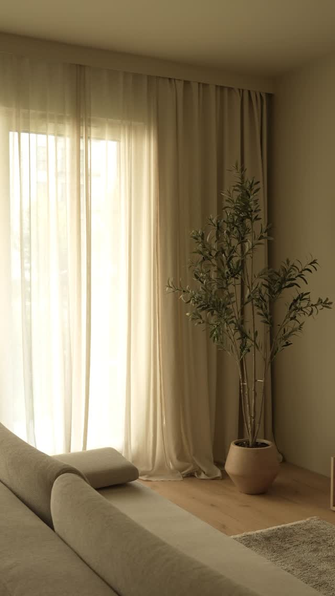

Nagłówek przykładowy
Tekst do uzupełnienia
Tekst do uzupełnienia
Tekst do uzupełnienia
Tekst do uzupełnienia
01 / O NAS
LaurAles projektuje i montuje dekoracje oraz osłony okienne w Warszawie i okolicach. Dobieramy tkaniny u Ciebie, w świetle i wśród kolorów Twojego wnętrza. W naszej szwalni powstają zasłony i firany dopasowane do okna i sposobu, w jaki korzystasz z pomieszczenia.
Od pomiaru po montaż zajmujemy się też roletami, żaluzjami i osłonami tarasowymi.
Poznaj nasz proces
02 / PORTFOLIO
03 / OFERTA
Dobieramy osłony do wymiarów i kształtu okna oraz do tego, ile światła i prywatności potrzebujesz. W trakcie pomiaru omawiamy tkaniny, sposób montażu i sterowanie.
Zapytaj o dobór osłon ↗04 / PROCES
Od pierwszej rozmowy do ostatniej fałdy tkaniny.
Opowiedz nam, co chcesz zmienić w swoich oknach. Ustalimy, czego potrzebujesz, i umówimy wizytę dekoratora w dogodnym terminie.
Przyjeżdżamy do Ciebie. Na miejscu mierzymy okna i dobieramy osłony w świetle oraz kolorystyce Twojego wnętrza. Pokazujemy też zdjęcia podobnych realizacji.
Po zatwierdzeniu projektu i warunków zamówienia ruszamy z pracą. Termin realizacji potwierdzamy pisemnie. Możesz zapłacić gotówką, kartą lub przelewem.
Dobieramy sprawdzone tkaniny i elementy mocowania. Nasze krawcowe szyją dekoracje na wymiar według uzgodnionego projektu.
Montujemy osłony, zawieszamy dekoracje i układamy tkaniny. Po zakończeniu możemy sfotografować realizację, jeśli wyrazisz zgodę.